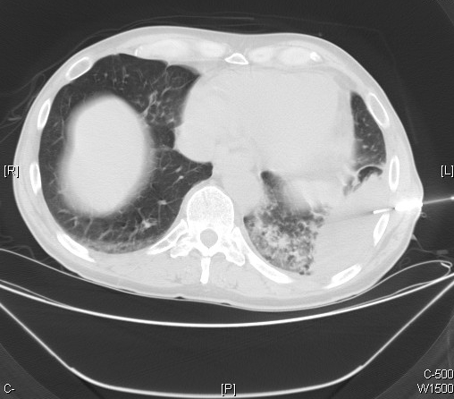

Ficha del catálogo
Neumonía organizada
- Sistema
- Respiratorio
- Modalidad
- TC
- Región
- Tórax
- Dificultad
- Avanzado
Respuesta inespecífica del pulmón consistente en tejido de granulación que ocupa los espacios aéreos distales y los bronquiolos. Puede ser criptogénica o aparecer asociada a infecciones, fármacos, radioterapia y enfermedades del tejido conjuntivo. Clínicamente simula una neumonía que no responde a antibióticos, con tos y disnea de semanas de evolución.
Técnica
Tomografía de tórax con cortes finos y reconstrucción de alta resolución, útil también para comparar con estudios previos y demostrar el carácter migratorio de las lesiones.
Qué observar
- Consolidaciones parcheadas de distribución periférica y subpleural
- Opacidades peribroncovasculares que acompañan a los bronquios centrales
- Vidrio deslustrado alrededor de las zonas consolidadas
- Signo del halo invertido, con vidrio deslustrado central rodeado de un anillo denso
- Carácter migratorio de las lesiones entre estudios sucesivos
- Escasa pérdida de volumen pese a la extensión de las consolidaciones
Hallazgos
Consolidaciones periféricas y peribroncovasculares bilaterales con vidrio deslustrado asociado, que cambian de localización en los controles.
Perlas
Una neumonía que migra y no responde a varios ciclos de antibiótico obliga a pensar en neumonía organizada. El halo invertido es muy sugerente, aunque no exclusivo, y su reconocimiento acorta mucho el camino diagnóstico.
Diagnóstico diferencial
- Neumonía eosinófila crónica
- Consolidaciones periféricas de predominio superior con eosinofilia en sangre.
- Neumonía bacteriana
- Cuadro agudo que responde al antibiótico y no migra.
- Adenocarcinoma con crecimiento lepídico
- Consolidación persistente en la misma localización, con broncograma irregular.
Simuladores
- Infarto pulmonar en cuña
- Cambios por radioterapia limitados al campo tratado
- Vasculitis con nódulos y consolidaciones
Por modalidad
- RX
- Opacidades periféricas cambiantes de aspecto neumónico
- TC
- Define la distribución y detecta el halo invertido
Protocolo
Alta resolución en inspiración sin contraste, con comparación sistemática frente a los estudios previos disponibles.
Clasificación
Se distingue entre la forma criptogénica, sin causa identificable, y las formas secundarias a infección, fármacos, radioterapia o enfermedad del tejido conjuntivo.
Errores frecuentes
- Insistir con antibióticos ante una consolidación que no mejora en semanas
- Atribuir el halo invertido siempre a infección fúngica
- No revisar los estudios previos y perder el dato de migración

neumonia organizada halo invertido consolidacion periferica intersticial alta resolucion